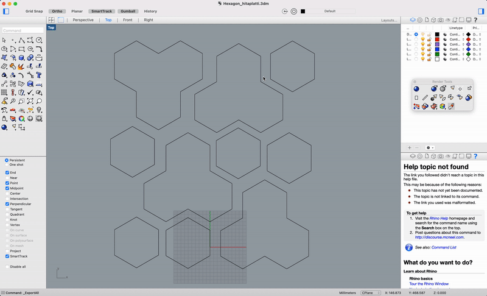

Verkefni 4 - Fræsing
Verkefnalýsing
Verkefni 4 í áfanganum framleiðsluferli vorið 2021 er fræsing. Markmiðið er að hanna, teikna, undirbúa og fræsa hlut. Fræst er í 1,5m x 1,5m krossviðs eða OSB plötu.
Inngangur
Ákveðið var að hanna eitthvað nytsamlegt sem vonandi væri hægt að nota ef vel tækist til. Í upphafi var leitað á leitarvél Goole eftir „cnc ideas“ og fljótlega fundust ýmsar tegundir af skurðarbrettum úr við. Til dæmis þau sem má sjá hér að neðan.
Frá skurðarbrettunum þróaðist hugmyndin að því að búa til hitaplatta. Löngun var til þess að gera eitthvað ágætlega frumlegt og helst eitthvað ólíkt því sem fannst á netinu og gert hefur verið áður. Á heimilinu eru til tveir hitaplattar úr kork í tveimur stærðum. Þeir voru mældir og stærðin á þeim höfð til hliðsjónar. Þvermál minni korksins er 13,5 cm og á sá stærri er 21 cm.

Hugmyndin var að búa til hitaplatta í lögun einhversskonar marghyrninga sem væri hægt að nota staka fyrir litla og stóra potta en einnig væri hægt að raða þeim saman sem væri þá hægt að setja undir stærri eldföst mót.
Hönnun og teikning
Til þess að hanna og teikna hlutinn ákvað ég að nota forritið Rhino 3D þar sem ég hef mesta reynslu af því forriti.
Innblástur fyrir hönnunni fékk ég úr náttúrunni frá býflugnabúum. Þar lítur hver eining út eins og sexhyrningur og auðvelt er að raða mörgum sexhyrningum saman til þess að búa til eina heild.
Fyrsta skrefið var að ákveða stærðina á hverri einingu. Ég miðaði við stærðina á hitaplöttunum hér að framan fyrir minni eininguna ákvað ég að hafa þvermál sexhyrningsins 14 cm. Eins og sjá má á myndinn hér að neðan þá gefur það hliðarlengd upp á 7 cm.
Næst voru teiknaðir upp sexhyrningar í Rhino. Til þess var notað skipunin „Polygon: Edge“ þar sem stilla þurfti á sex hliðar og velja svo hnit fyrir tvo punkta á milli einnar hliðar. Fyrstu punkur var punkturinn 0,0 og sá næsti 0,70 svo hliðarlengdin yrði 70 mm eins og ákveðið hafði verið.
Þetta var svo endurtekið og teiknaðir voru samtals 18 sexhyrningar svo þeir mynduðu saman flöt eins og sjá má hér að neðan.
Til þess að gera formið aðeins meira spennandi og svo einingarnar yrðu mismunandi stórar eins og lagt hafði verið upp með í upphafi þá voru þrír sexhyrningar sameinaðir. Það var gert með því að teikna „polyline“ í kringum útlínur þriggja sexhyrninga og formið fyrir þessa þrjá sexhyrninga svo eytt í burtu.
Gerðar voru fjórar svona stærri einingar og þá lítur teikningin út eins og sjá má hér að neðan.
Næst voru einingarnar færðar í sundur svo hægt sé að fræsa hverju einingu út fyrir sig.
Teikningin var svo vistuð sem dxf svo hægt sé að opna hana með Vcarve.
Undirbúningur fyrir fræsingu
Til þess að undirbúa teikninguna fyrir fræsingu þá er notað forritið Vcarve. Forritið er ekki fyrir Mac og þurfti því að nota tölvu upp í FabLab. Ekki er til skjáskot úr forritinu og helstu stillingum en reynt verður að lýsa ferlinu eftir fremsta megni. Hér má finna myndband frá Hafliða sem lýsir undirbúningi fyrir fræsingu í Vcarve. Í fyrsta skipti sem forritið er opnað er farið inn á þessa síðu hjá FabLab, kóðinn afritaður og settur inn í forritið til þess að tengja fræsinn í FabLab við forritið.
Skráinn er svo opnuð með því að fara í import vectors og svo finna dxf skránna. Við byrjum svo á því að skilgreina vinnusvæðið okkar sem 1200mm x 1200mm og efnisþykktina 12mm. Efnisþykktin er þykkt plötunar sem valinn var í verkið. Til þess að vera viss um að allir hlutirnir passi vel saman og fræsirinn get skorið allt rétt út þá filletum við öll horn með 3mm radíus.
Næst opnuð við toolpath flipann og veljum profile toolpath svo bitinn fari utan við línurnar sem hann ferðast eftir. Veljum cut depth sem 12,2mm því efnið okkar er 12mm þykkt og við viljum vera viss um að fara í gegnum efnið. Næst veljum við 6mm bita sem við munum nota við fræsinguna og pössum að gildi fyrir spindle speed og chip load sé eftir leiðbeiningum frá Hafliða. Næst búum við til tabs sem voru 3mm þykkir og sjá um að halda hlutunum við plötuna. Þrír voru settir á stærri hlutina og tveir á þá minni. Svo var smellt á calculate og skráin okkar tilbúin til fræsingar.
Fræsing
Þegar verið er að fræsa er mikilvægt að fara varlega og þekkja vel allar öryggisreglur. Hér má sjá öryggismyndbönd um fræsinguna sem mikilvægt er að horfa á áður en farið er að fræsa. Mikilvægt er að fylgjast með vélinni vinna og vita um öryggishnappa og vera viðbúinn til þess að stöðva vélina ef eitthvað fer úrskeyðis. Einnig þarf að vera í lokuðum skóm, ekki í lausum fatnaði sem getur flækst í vélinni, vera með öryggisgleraugu og helst heyrnahlífar.
Platan sem hafði verið valinn var sett á fræsivélina og hún skrúfuð föst í með einni skrúfu í hvert horn. Réttur 6mm biti var í vélinni og því þurfti ekki að skipta um hann. Næst voru x, y og z-ásar núllstilltir í forritinu ShopBot með tölvunni sem tengd var við fræsinn. x og y ásarnar voru stilltir með því að færa höfuðið á fræsinum alveg út í hornið og stilla núllstilla í ShopBot. z-ásinn var núllstilltur með því að leggja plötu sem tengd var við fræsinn undir bitann og lækka höfuðið þar til bitinn snerti plötuna.
Áður en byrjað var að fræsa var kveikt á prógrami sem hitar fræsinn upp í 10 mínútur. Þegar fræsirinn hafði hitnað var byrjað að fræsa. Mikilvægt var að fylgjast vel með ferlinu til þess að geta stoppað fræsinn ef eitthvað skyldi koma upp á. Eftir að fræsirinn hafðir skorið út alla partana var ryksugað upp úr raufunum. Partarnir voru ennþá fastir þar sem bætt hafði verið við tabs í Vcarve. Því þurfti að losa þá með sporjárni og hamri. Svo voru allir hlutirnir pússaðir með sandpappír.
Niðurstaða
Hlutirnir pössuðu allir vel saman og voru einnig af réttri stærð. Minni hlutirnir pössuðu vel fyrir lítinn pott og þeir stóru fyrir stærri potta.
Hönnunarskjöl
Hér má nálgast öll hönnunarskjöl
Vinnuframlag
Hugmyndavinna: 2 klst
Teikning: 3 klst
Öryggismyndbönd: 1 klst
Undirbúningur fyrir fræsingu: 1,5 klst
Fínpússun: 1,5 klst
Myndvinnsla: 3 klst
Skráning: 4 klst